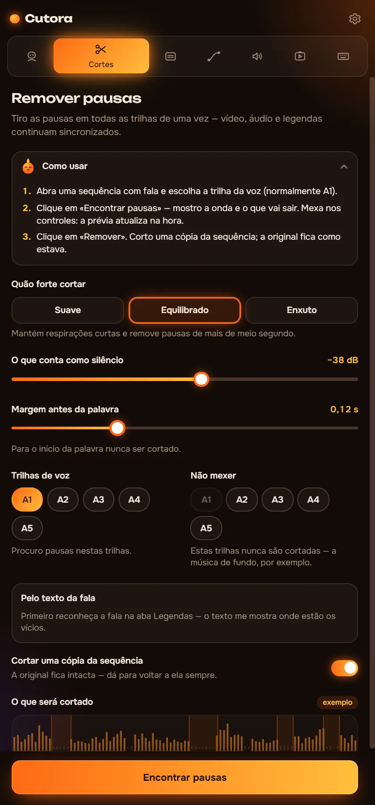
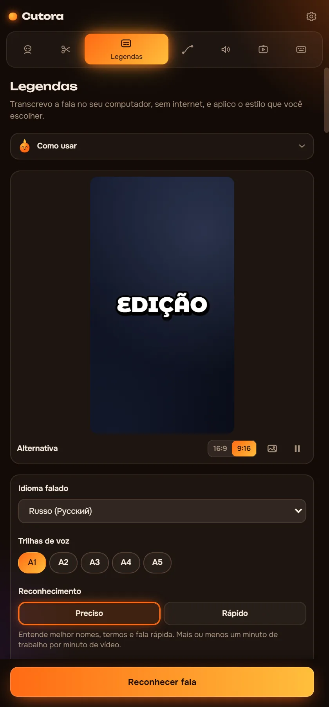
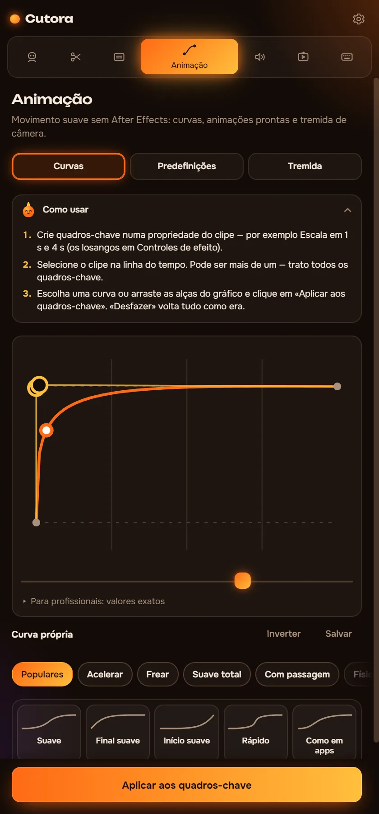
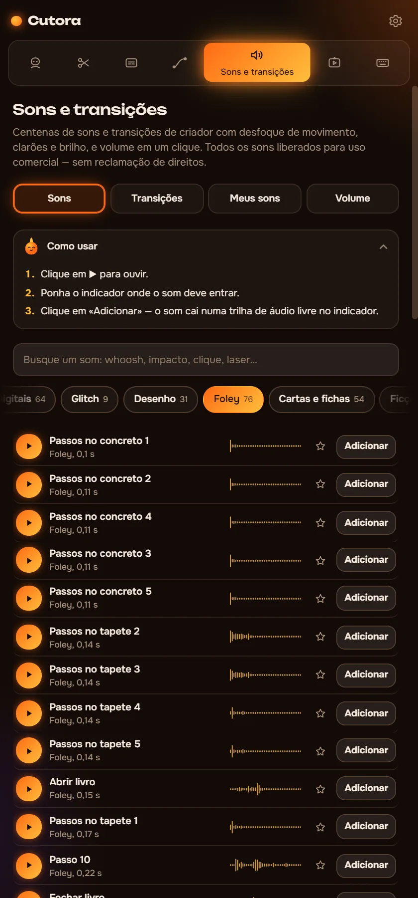
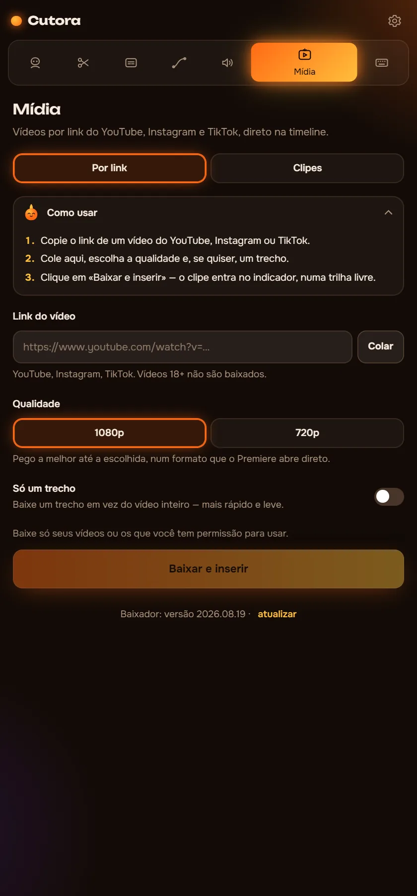
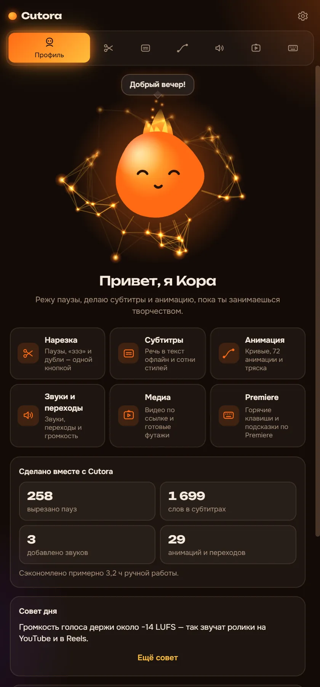

Corte as pausas. Coloque legendas. Dê movimento.
Cutora é um painel para Premiere Pro que faz a parte lenta da edição por você. Funciona no seu computador, então seus vídeos nunca saem dele.
- Windows, Premiere Pro 2022+
- Funciona sem internet
- Pague uma vez
Oi, eu sou a Cora. Toque em mim!
Veja o que será cortado antes de cortar
O Cutora encontra as pausas e marca na forma de onda. Escolha o que conta como silêncio e corte. Aqui tem um clipe de 90 segundos para testar.
- Duração do vídeo
- 1:30
- Mais curto em
- 0:00
No Premiere, ele corta todas as trilhas de uma vez e fecha os buracos. Trabalha numa cópia da sequência, e um Ctrl+Z desfaz tudo.
Seis módulos, um painel
Cada módulo faz um trabalho que você faria à mão ou com outro plugin.
Remova pausas em todas as trilhas de uma vez
Vídeo, voz e música continuam sincronizados. Você vê cada corte na forma de onda antes de qualquer mudança.
- Três intensidades ou o seu próprio nível de silêncio
- Remove os «é», «hum» e tomadas erradas usando a transcrição
- Corta uma cópia da sequência, o original fica intacto

Legendas que acompanham a voz
O reconhecimento de fala roda no seu computador. Escolha um estilo, corrija uma palavra se precisar e as legendas vão para a timeline.
- Uns 90 idiomas falados, sem internet
- Centenas de estilos animados e mais de 160 fontes
- Edite o texto depois e atualize as legendas com um clique

Movimento suave sem After Effects
Dê aos seus keyframes uma suavidade de verdade ou aplique uma animação pronta num clipe.
- Curvas de suavização para qualquer keyframe, inclusive as suas
- 72 animações prontas: entradas, saídas e zooms rápidos
- 25 tremidas de câmera, de uma câmera na mão leve a uma explosão

Transições com som, no tempo certo
As transições ficam numa camada de ajuste e cada uma vem com o seu som.
- Whooshes, impactos e risers gravados de verdade
- Equalize o volume do vídeo inteiro com um clique
- Adicione seus próprios packs de som de qualquer pasta

Clipes e vídeos por link
Cole um link e o vídeo entra no seu projeto. Sem downloaders nem conversores.
- Importe do YouTube, Instagram ou TikTok por link
- Um pack de clipes com tela verde e gameplay
- Cada inserção pode ser desfeita como qualquer outra edição

A Cora responde suas dúvidas
Travou? Pergunte à Cora como fazer algo no Cutora ou na edição. Ela conhece cada aba e o básico de uma boa edição.
- Responde sem internet
- Fala os seis idiomas da interface
- Um tour rápido na primeira abertura

Cutora para Premiere Pro
$29.99$39
Um pagamento. Sem assinatura.
- Os seis módulos: Corte, Legendas, Movimento, Sons, Mídia e Cora
- Sua chave funciona em dois computadores
- Funciona offline depois de uma ativação
- Interface em 6 idiomas
- Pack de tela verde e gameplay incluído
Pague com cartão bancário pela Lava.top ou com cripto (USDT).
Perguntas
Do que eu preciso para usar o Cutora?
Windows 10 ou 11 e Adobe Premiere Pro 2022 ou mais recente.
Funciona no Mac?
Ainda não. Por enquanto o Cutora funciona no Windows.
Como eu recebo depois de pagar?
Você recebe um e-mail com o link de download e a sua chave. O guia de instalação deste site leva você por tudo em cinco minutos.
Em quantos computadores posso usar?
Em dois. Se trocar de computador, escreva para o suporte e transferimos a sua chave.
Precisa de internet?
Só para ativar a chave uma vez e para importar vídeos por link. Cortes, legendas e movimento funcionam offline.
Quais idiomas são suportados?
O painel fala inglês, russo, espanhol, português, alemão e árabe. As legendas funcionam com uns 90 idiomas falados.